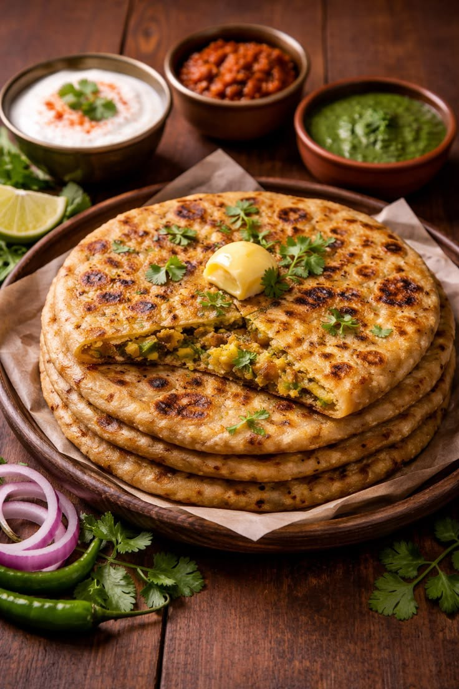
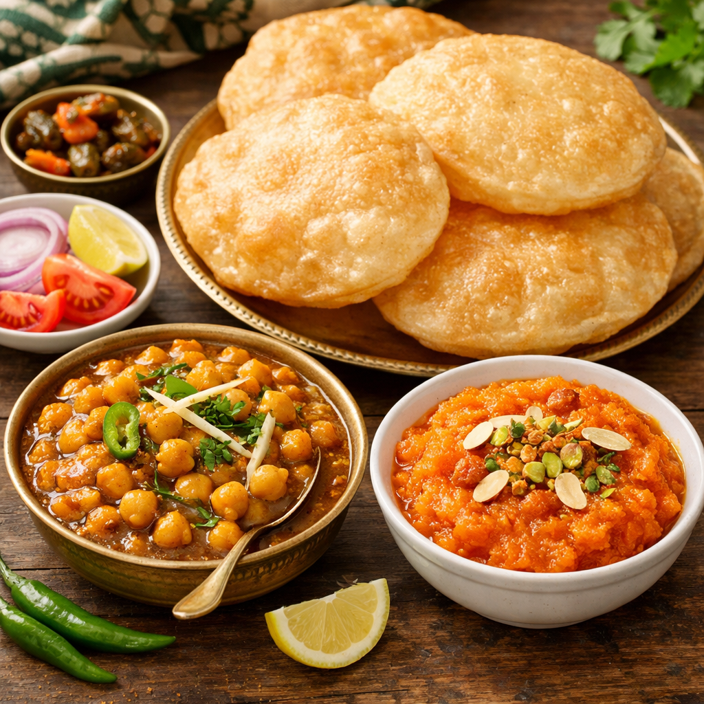
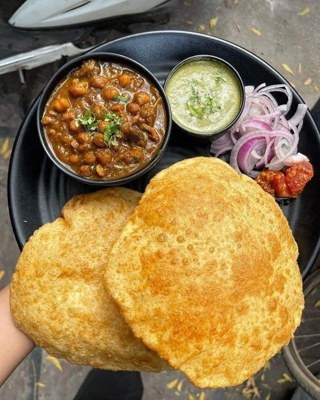
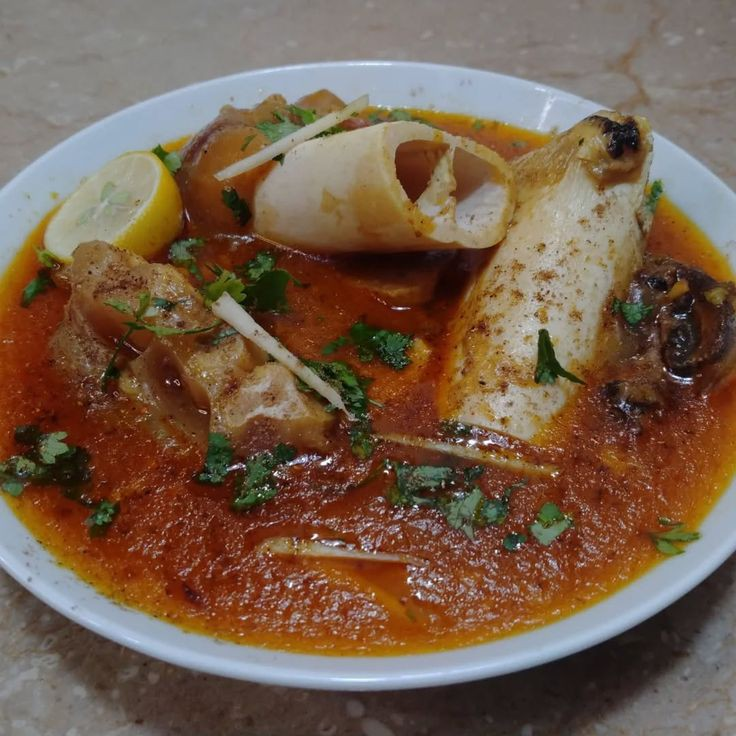
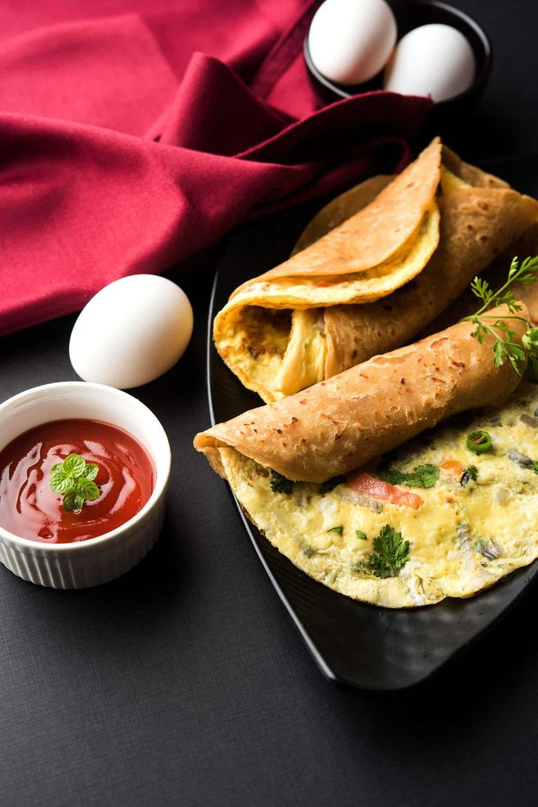

VegetarianAloo Paratha
Crispy whole-wheat flatbread stuffed with spiced mashed potatoes. Served best with fresh yogurt, pickle, and a knob of white butter.

The undisputed king of Pakistani breakfasts. Fluffy deep-fried puris paired with sweet semolina halwa and spiced chickpeas — a Sunday morning tradition in every Pakistani home.
6 authentic Pakistani morning dishes to start your day right

VegetarianCrispy whole-wheat flatbread stuffed with spiced mashed potatoes. Served best with fresh yogurt, pickle, and a knob of white butter.

VegetarianTangy and spiced chickpeas cooked in a thick masala gravy — the essential side dish of any halwa puri breakfast spread.

With MeatA slow-cooked delicacy made from goat or beef trotters, simmered overnight in warming spices. A winter morning favourite across Punjab.

QuickA golden paratha layered with a spiced egg omelette, cooked on a tawa with ghee. Ready in 20 minutes — perfect for busy mornings.
The ultimate Pakistani morning ritual — strong black tea brewed directly in full-fat milk with cardamom and sugar. Rich, bold, and deeply satisfying.
 Sweet
Sweet
Smooth, golden semolina pudding made with ghee, sugar, and cardamom — traditionally served with puri as part of a full Pakistani breakfast.
Pro tips to make your desi breakfast taste even better
Cooking your paratha in pure desi ghee instead of oil gives it a richer flavour and that beautiful golden colour every time.
Let paratha or puri dough rest for at least 20–30 minutes after kneading. This makes it softer and easier to roll out evenly.
For perfect doodh pati, keep the heat low and let the tea simmer slowly in the milk — rushing it makes the tea taste thin and bitter.